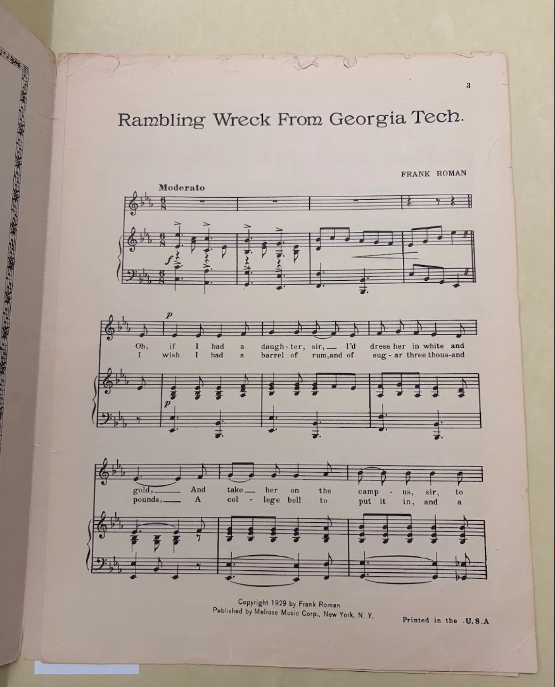
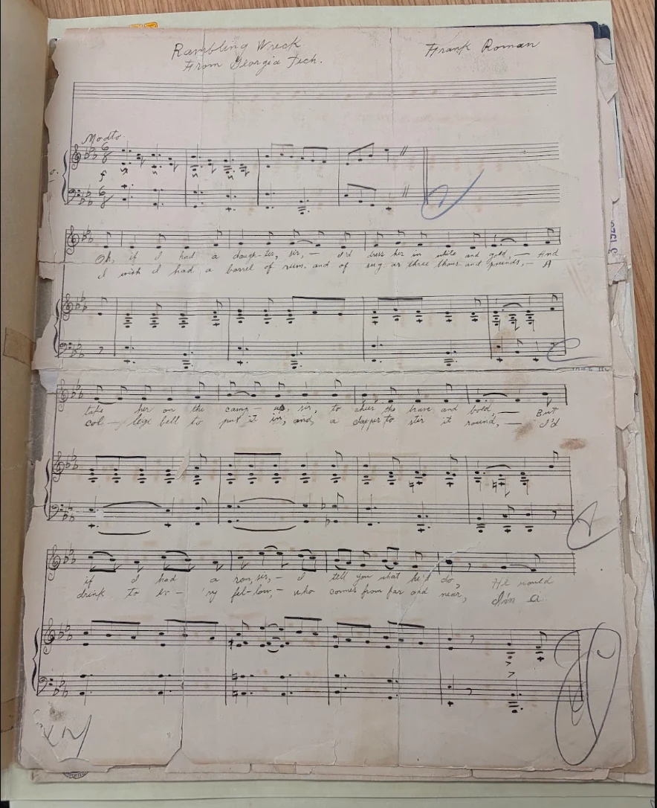
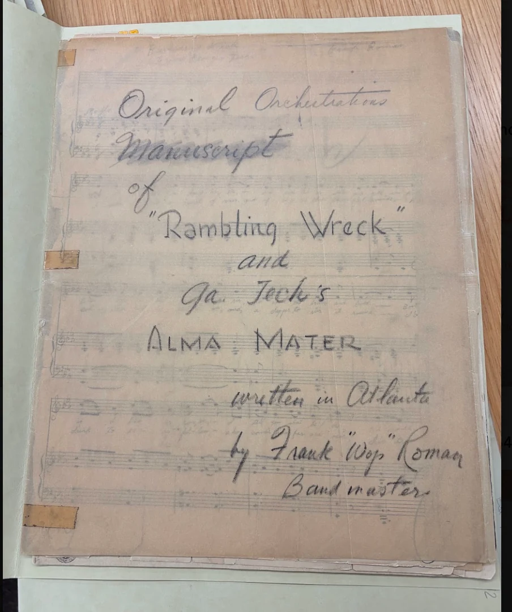
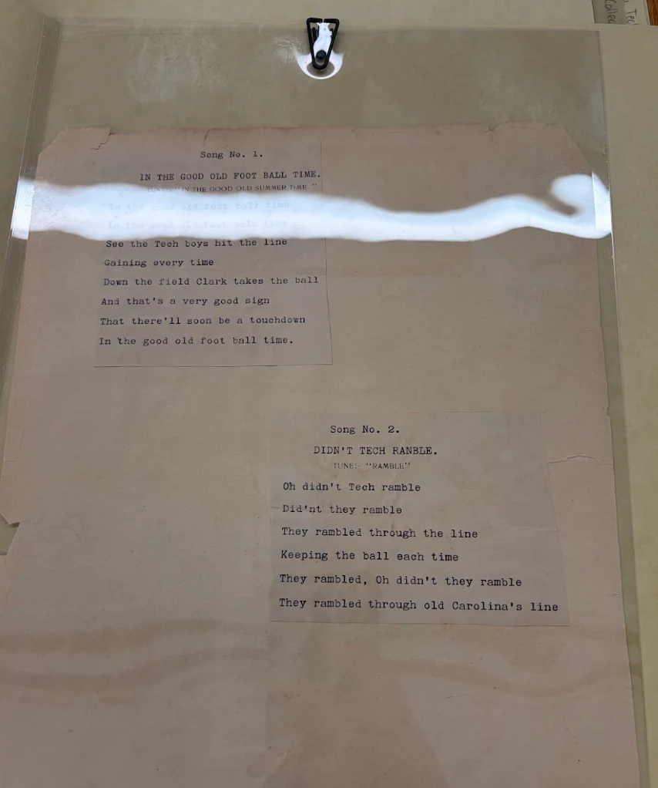
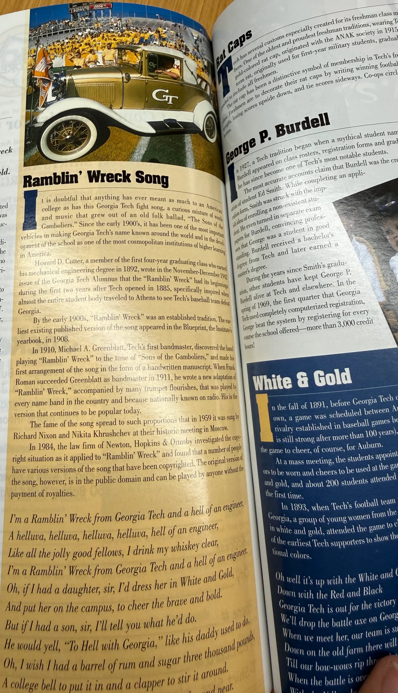
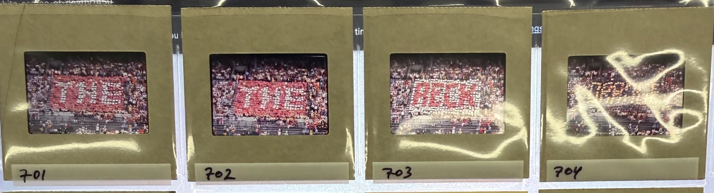
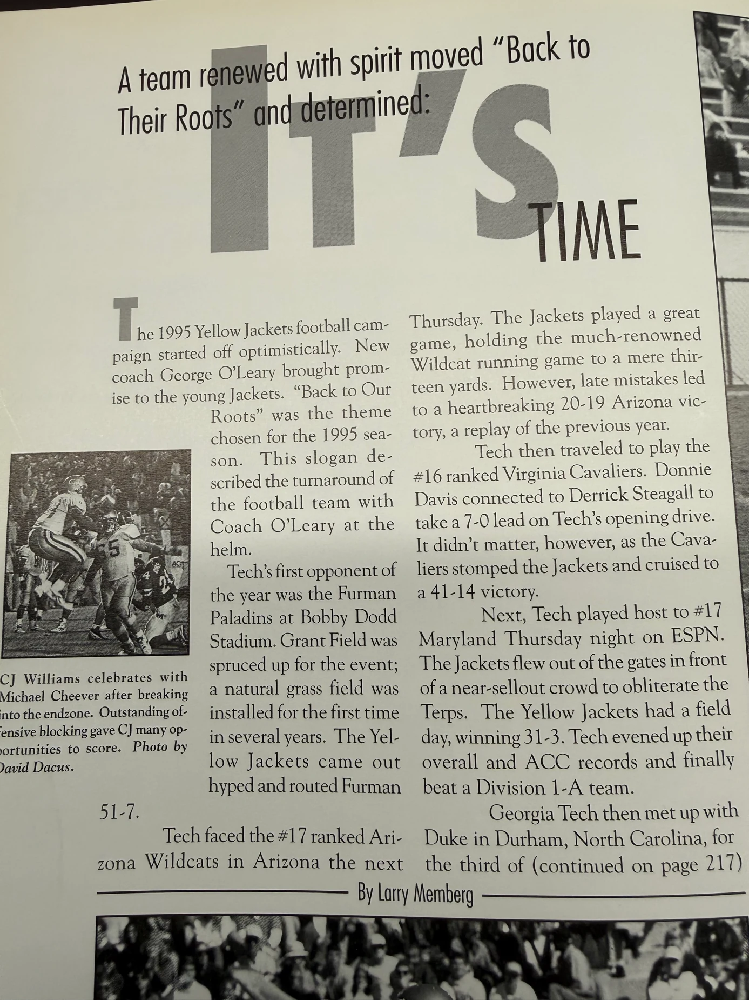

Learning what to sing
Tech’s game-day songs started out written down on paper. The Georgia Tech Songs Collection has typed student songs and yells from as early as 1906, along with handwritten manuscripts by Frank Roman, who led the Tech band from 1913 to 1928. Among the collection’s songs are “Ramblin’ Wreck,” “Alma Mater,” and “Up With the White and Gold.” Roman arranged the tune of an older drinking song called “Son of a Gambolier” for “Ramblin’ Wreck.” The 1923 “Alma Mater” credits Roman and Iver Granath.
Songs on paper
Open a note to compare the fight song with Roman’s manuscript and other songs from the archives.


Two verses under one tune
The upper line begins with dressing a daughter in white and gold. The lower line asks for a barrel of rum. Both verses sit beneath the same melody, a tune Roman adapted from the older drinking song “Son of a Gambolier.”
From manuscript to print
The manuscript puts both verses beneath a single melody too. Both versions begin with a short instrumental introduction before the singers come in.



The 1923 alma mater
The handwritten manuscript cover names both “Rambling Wreck” and Tech’s alma mater. The published 1923 score credits music to Roman and words to Iver Granath. Its opening verse calls on students to look up at the white and gold banner.



More songs for the stands
The typed song sheet for “Didn’t Tech Ramble” gives singers a tune they might already know and words about Tech carrying the ball through Carolina’s line.



Football programs starting in the 1920s printed the songs and yells so fans could sing along. The program became a way to teach the crowd how to be Tech fans.


These songs are still being taught today. In a 2025 interview, players and coach Brent Key talked about how singing “Ramblin’ Wreck” together connects the team with the fans, even during tough seasons (Croatto, 2025). The marching band also passes down its own traditions, like “You’ve Said It All” and “The Horse,” and leads the rest of the stadium through them.
Who gets a seat?
Students have been complaining about the student section for a long time. In the October 17, 1941 issue of the Technique, letters and editorials debated overcrowding, who got seats, and what happened to classmates who had to work jobs during games. Read the issue.
When the stands became part of the show
By the late 1960s, the crowd was becoming part of the show. Slides from the Dean of Students collection show the band in the stands, cheerleaders on the sidelines, and card displays where students held up colored cards to spell out giant letters. A 1974–75 Technique article describes the student section in the east stands, with organized cheering, flashcard displays at halftime, and fans who supported the team no matter what the score was. Band slide record · Card display slide record · Read the article.


Flip the card section
Each square is one student holding a card. Pick a message to flip the section on cue, or tap single cards to make your own.
Back to Our Roots
Supporting the team no matter the score keeps coming up in our sources. The 1990 team won a national championship, and students also showed up in the years when the team was rebuilding. The 1996 Blue Print covers the 1995 season under new coach George O’Leary, which had the theme “Back to Our Roots.” In a Thursday night home game on ESPN, Tech beat No. 17 Maryland 31–3 “in front of a near-sellout crowd.”


A full student section
In 2024, The Technique reported that student season tickets sold out. An athletics spokesperson told the paper that students bought more than 6,000, roughly 30% more than the previous year. Some students had trouble getting to and from their seats. We were struck by how similar this was to the complaints students were making in 1941. Read the 2024 report.
Researchers at Tech have even found a way to measure the crowd. They put accelerometers in Bobby Dodd Stadium to record how much the stands shake when fans jump and cheer, then matched that data with touchdowns and other big plays (Patel et al., 2025). See the 2025 study · Coyle’s 2024 chapter.
A 2009 study by Clopton surveyed 1,790 undergraduates at four large universities and found that students who saw themselves as fans of their school’s team tended to feel more connected to campus, both socially and academically. A shared sense of community helped explain this connection. Singing the same songs with everyone else in the stadium is one way that community gets built.
What our sources don’t show
Some of the early song sheets include drinking lyrics and yells meant to make fun of the other team. The 1941 letters also show students arguing over who deserved a seat. Women were first admitted as students in 1952, and Tech desegregated in 1961 (McMath et al., 1985). For most of the years our early sources cover, the stands were mostly white men. Research by Beyer and Hannah also makes us consider how sports traditions can leave out students who don’t feel connected to them.